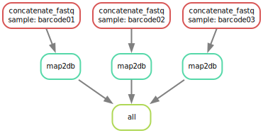

Workflow tutorial
To demonstrate how Snakemake is used in practice we'll go through an example workflow. To be able to follow along it's assumed that you have set up a project folder from the template git repository as described on the previous page.
Example workflow
The goal of this simple example workflow is to map some demultiplexed nanopore sequences to a database. This is done in two steps, which are called rules in Snakemake. The rules will do the following:
- Concatenate all
.fastq.gzfiles in each subfolder in the input data folder into single files using the subfolder (barcode) names as sample IDs - Map each file to a database using
minimap2andsamtoolsto produce a.samfile for each sample
The Snakefile
The workflow/Snakefile is the main workflow file where all inputs and outputs are defined as well as the actual rules to run. To achieve our goal a Snakefile could look like this:
workflow/Snakefile
import os
from snakemake.utils import min_version
# minimum snakemake version required
min_version("7.18.2")
# config file path
configfile: "config/config.yaml"
# list all subfolders in the input_dir (defined in the config.yaml file)
sample_dirs = os.listdir(config['input_dir'])
# include rules
include: "rules/concatenate_fastq.smk"
include: "rules/map2db.smk"
# define the expected output using wildcards
rule all:
input:
expand(os.path.join(config['output_dir'], "{sample}.sam"), sample=sample_dirs)
Snakefile must always contain the special rule all. This rule is used to define a list with the expected output (confusingly listed under input) of the entire workflow, which can be dynamically generated depending on the input data using wildcards and the expand() function, which in this example will generate a list of output .sam files for each subfolder in the input_dir defined in the config file. Learning how to use wildcards is very important as it's required to enable many of the awesome features Snakemake provides, so it's highly recommended experimenting a bit with them and read the Snakemake docs.
Workflow configuration file
The configfile variable is a required Snakemake variable and must point to a config file, which in this example looks like this:
config/config.yaml
output_dir: "results"
input_dir: "data/samples/"
tmp_dir: "tmp"
db_path: "/databases/midas/MiDAS5.2_20231221/output/FLASVs.fa"
max_threads: 128
The config file can contain anything, and is used to allow the user to customize how the workflow will run, which input and database files to use, individual settings for certain tools, and so on. Importantly, it should NOT contain any settings relevant for the exact computing setup and how things are run on a particular platform. For this Snakemake instead uses profiles that are supposed to be configured in config.yaml files under profiles/ instead, more on them on the next page.
Rules
Rules define the actual workflow steps and from these Snakemake will dynamically start one or more tasks depending on the input data and configuration. The two rules in the above example Snakefile are placed in two files separate from the Snakefile and imported using include statements to provide a better overview as the workflow grows, but they could also have been written directly in the Snakefile itself. The files can each contain any number of rules or arbitrary Python code. The two files for the workflow look like this:
concatenate_fastq.smk
import glob
import os
# helper function to generate a list of all fastq.gz files
# per wildcard (subfolder/sample).
# See https://snakemake.readthedocs.io/en/latest/tutorial/advanced.html#step-3-input-functions
def listFastq(wildcards):
fastqs = glob.glob(os.path.join(config['input_dir'], wildcards.sample, "*.fastq.gz"))
return fastqs
rule concatenate_fastq:
input:
listFastq
output:
temp(os.path.join(config['tmp_dir'], "samples", "{sample}_concat.fastq.gz"))
resources:
# calculate required memory based on input file size
# assuming it scales linearly, ensures a minimum of 512MB
mem_mb=lambda wc, input: max(3 * input.size_mb, 512)
threads: 1
log:
os.path.join(config["log_dir"], "concatenate_fastq", "{sample}.log"),
shell:
"cat {input} > {output}"
map2db.smk
rule map2db:
input:
os.path.join(config['tmp_dir'], "samples", "{sample}_concat.fastq.gz")
output:
os.path.join(config['output_dir'], "{sample}.sam")
resources:
# calculate required memory based on input file size
# assuming it scales linearly, ensures a minimum of 10GB
mem_mb=lambda wc, input: max(3 * input.size_mb, 10240)
threads: config['max_threads']
params:
db_path = config['db_path']
conda:
"../envs/map2db.yml"
log:
os.path.join(config["log_dir"], "map2db", "{sample}.log")
shell:
"""
minimap2 \
-ax map-ont \
-K20M \
-t {threads} \
--secondary=no \
{params.db_path} \
{input} \
| samtools \
view \
-F 4 \
-F 256 \
-F 2048 \
--threads $(nproc) \
-o {output}
"""
Rules can also run any arbitrary scripts placed in the workflow/scripts folder instead of shell commands, which can be handy for more customization and longer commands, or to run R scripts and markdown files to produce some figures, perform analyses, and so on. Refer to the Snakemake docs for details about how to pass on variables from the Snakemake workflow to the scripts.
Example output
For now, it's more important that you understand the essential components of a workflow and what the resulting output from the above example looks like before learning how to properly run a Snakemake workflow on the BioCloud HPC. This will be described on the next page instead.
When running the workflow above the concatenate_fastq rule will with the following example input data:
data/samples
├── barcode01
│ ├── FAW32656_pass_barcode01_06cd0bbc_287fe392_0.fastq.gz
│ └── FAW32656_pass_barcode01_06cd0bbc_287fe392_1.fastq.gz
├── barcode02
│ ├── FAW32656_pass_barcode02_06cd0bbc_287fe392_0.fastq.gz
│ └── FAW32656_pass_barcode02_06cd0bbc_287fe392_1.fastq.gz
└── barcode03
├── FAW32656_pass_barcode03_06cd0bbc_287fe392_0.fastq.gz
└── FAW32656_pass_barcode03_06cd0bbc_287fe392_1.fastq.gz
start 3 separate tasks that result in the following (temporary) output files:
tmp
└── samples
├── barcode01_concat.fastq.gz
├── barcode02_concat.fastq.gz
└── barcode03_concat.fastq.gz
As soon as any of the files have been produced by the 3 separate and totally independent concatenate_fastq tasks, the map2db tasks will start immediately regardless of whether all files have been produced first - no time lost. From the 3 temporary files the map2db rule will spawn 3 new separate tasks and produce the following files:
This is also the final output defined in the all rule, so once these 3 files have been created, Snakemake exits and we're done.
If we now run the workflow again, Snakemake won't do anything unless specifically asked to, because the expected final output has already been produced previously. The same is true for the individual tasks and this is how Snakemake adds checkpoints to workflows. It will not start from scratch every time you run a workflow, but instead move on from the last checkpoint until the final output has been produced, which is very handy if (when) something fails.
The Directed Acyclic Graph (DAG)
The Snakefile will be read sequentially by Snakemake, however the exact order of the individual rules doesn't matter, since Snakemake will, before running anything, first build a dependency graph called the DAG (Directed Acyclic Graph) between all the rules depending on the input's and output's defined for each rule and the exact input data used. Some rules can therefore be run completely independently of eachother in parallel if they don't depend on eachother like in the example workflow above, while other rules will not run before an expected output from another rule has been produced first. This is a very powerful feature that is well-suited for HPC systems that use a job scheduling system like SLURM, because the tasks can be submitted by Snakemake as separate jobs with separate resource allocations and run simultaneously, while still under Snakemake's control. The workflow DAG can be visualized using the following command, and will for this particular example data with 3 samples look like this:

If we now need to scale this up to a full nanopore flowcell with 96 barcodes, for example, Snakemake would simply submit 96 jobs at once instead of 3, while the time it takes to finish would be the same (of course as long as there are resources available). Awesome.
Software deployment methods
To ensure the required software is available for each rule Snakemake supports both Conda environments and apptainer/singularity containers. You can add support for both at the same time by defining both conda: and container: at each rule definition, and then let the user decide which one to use.
Conda
To use Conda environments you simply note the requirements down in a file, preferably with the exact versions used during development, and provide the path to conda at the rule definition like in the map2db rule above. An environment file might look like this:
envs/map2db.yml
Snakemake will then create the environment(s) the first time the workflow is run and automatically load the environment before running each task.
Containers
To use apptainer/singularity containers you just supply the name of the container in a container registry, for example container: docker://biocontainers/minimap2. If you need a container with multiple tools at once see multi-package containers.
Software modules
Software environment modules are also supported by supplying the module name to envmodules in the rule definition. Modules are not as declarative and portable in nature as Conda environments or containers, however, and is therefore not recommended. See additional details here.
Snakemake wrappers
The above example is rather simple and is only made for demonstrating the basics of Snakemake workflows. But if this was part of a real workflow, however, it would not be the proper way to achieve our particular goals, because someone has of course already used minimap2 in a Snakemake workflow before. So we could have saved some time and effort and instead used one of the many community-made Snakemake wrappers for each rule. The format is exactly the same as a normal rule where you define input's and output's etc, but the exact command(s) that the rule would normally run is replaced with fx wrapper: "v3.3.4/bio/minimap2/aligner". If rules for a certain tool isn't available already - you can contribute too!